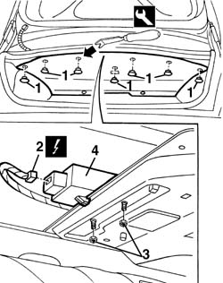
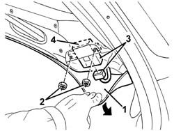

5580E30 receiver for car alarm remote control - r r
- Path
- Procedures > 55 ELECTRICAL EQUIPMENT > 5580 SPECIAL ACCESSORIES > 5580E anti-theft device > 5580E30 receiver for car alarm remote control - r r
- Kind
- repair procedure (removal / refitting; the operation number is the code)
- Applies to
- all engines; all production periods
- Interactive page
- https://sloeber94.github.io/elrnDB-a156/en/#/3238547
Applies to: all engines; all production periods
 Removing
Removing
 Refitting
Refitting1. Open the bonnet lid and remove the buttons retaining the upper trim using the special tool.
 | Name | Country |
|---|---|---|
1 | Scraper blade | 1.823.015.000 |
2. Lower the upper trim and disconnect the electrical connection for the receiver.
 | Name | Connector |
|---|---|---|
2 | Alarm remote control receiver |
3. Unscrew the nuts.
4. Remove the receiver.

Applies to: all engines; all production periods
Refitting
RemovingCheck that the receiver is not damaged.
Fit the receiver, fastening it using the bolts.
Connect the electrical connection
Check the operation of the system using the Examiner or the other diagnostic equipment.
Place the upper trim back in position and secure it using the retaining buttons.
Applies to: all engines; all production periods; only with equipment: Station Wagon
Removing
Refitting7040B22 luggage compartment/load platform moulding - r+r
7040B15 (One), rear side trim mounting BRACKET left or right - R.R . (right side).
7040B28 PET transport PROTECTION and load carrying compartment COVER COMBINATION BLIND - R.R.
- 7040L44 rear compartment scuff strip - r r (right side).
7050A47 SIDE PANEL (one) for rear seat BACKREST., left or right - R.R . (right side).
7040B30 l/h or r/h side support (one) for load platform cover blind - arrange (right side).
1. Lower the side trim.
2. Unscrew the nuts.
3. Move the receiver slightly and disconnect the electrical connection.
| Name | Connector |
|---|---|---|
3 | Alarm remote control receiver |
4. Recover the receiver.

Applies to: all engines; all production periods; only with equipment: Station Wagon
Refitting
RemovingCheck that the receiver is not damaged.
Connect the electrical connection to the receiver.
Position the receiver and fasten it using the nuts.
Check the operation of the system using the Examiner or the other diagnostic equipment.
Refit the side trim.
7040B30 l/h or r/h side support (one) for load platform cover blind - arrange (right side).
7050A47 SIDE PANEL (one) for rear seat BACKREST., left or right - R.R . (right side).
- 7040L44 rear compartment scuff strip - r r (right side).
7040B28 PET transport PROTECTION and load carrying compartment COVER COMBINATION BLIND - R.R.
7040B15 (One), rear side trim mounting BRACKET left or right - R.R . (right side).
Topics linked from this page (6)
- 7040B15 (One), rear side trim mounting BRACKET left or right - R.R .
- 7040B22 luggage compartment/load platform moulding - r+r
- 7040B28 PET transport PROTECTION and load carrying compartment COVER COMBINATION BLIND - R.R.
- 7040B30 l/h or r/h side support (one) for load platform cover blind - arrange
- 7050A47 SIDE PANEL (one) for rear seat BACKREST., left or right - R.R .
- M35 Alarm remote control receiver
Topics that link to this page (7)
- A30 ALARM NOT WORKING LUGGAGE COMPARTMENT UNLOCKED
- A31 ALARM DOES NOT COME ON WHEN LUGGAGE COMPARTMENT IS CLOSED
- P03 DOOR CLOSING FAULTY / REAR TAILGATE
- 7005N62 central lockung remote control receiver - r r with courtesy light removed
- 7010N62 central locking remote control receiver - r r with courtesy light removed
- 7010N63 Central locking remote control RECEIVER - R.R. with third brake light removed
- 7010N68 receiver for central locking remote control - r r with any fouling parts removed